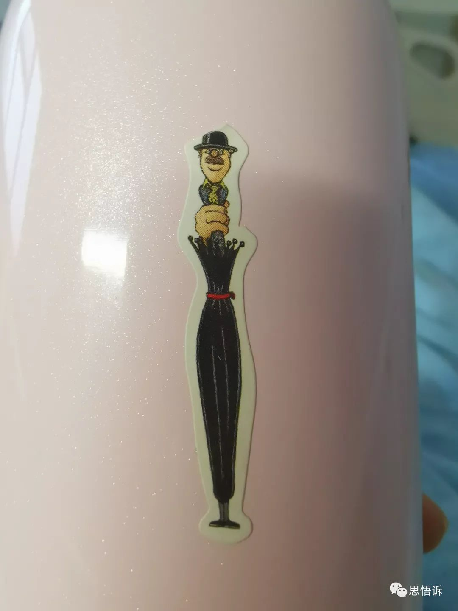
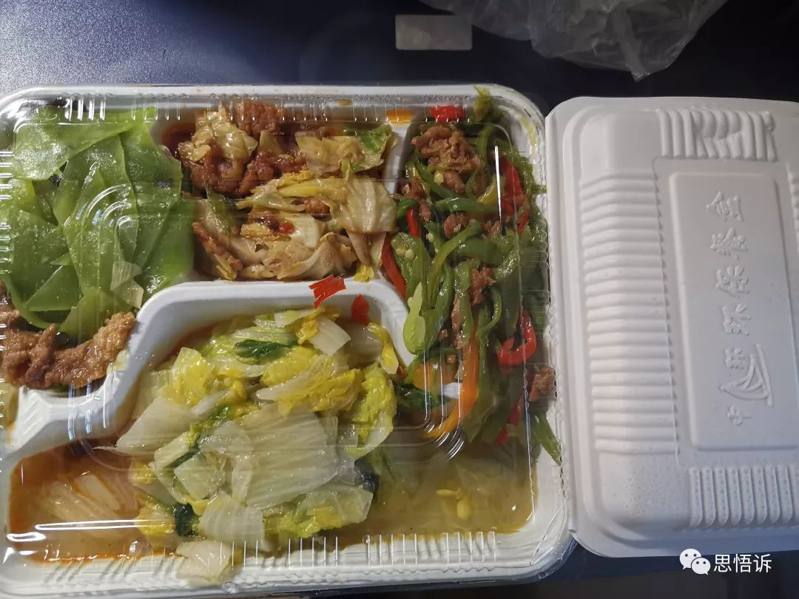
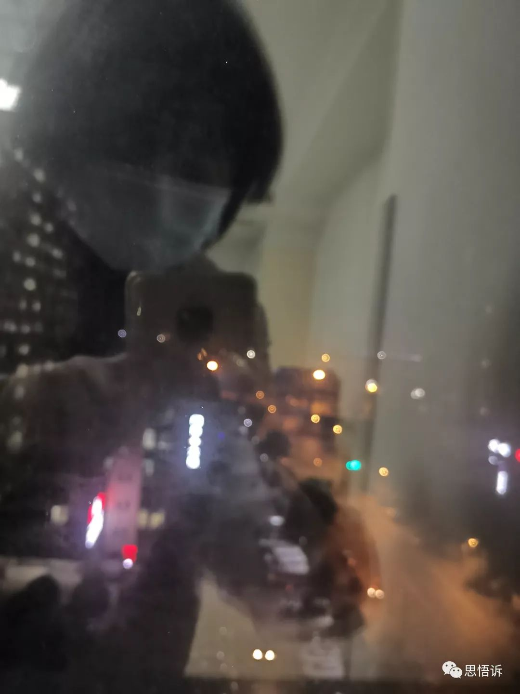
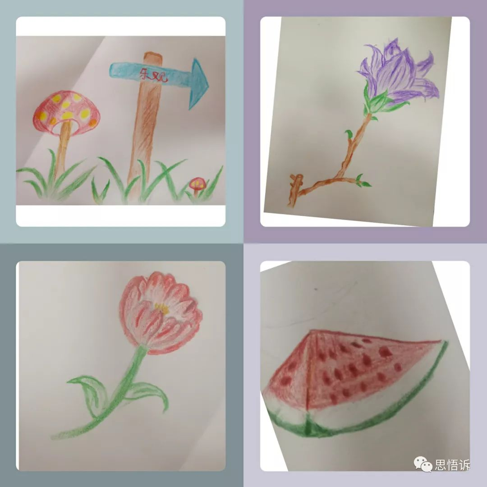

特别报道 | 武汉医生亲述：前线究竟需要什么
原文链接 备份链接 祁立说现在最大的困难，是发热门诊的就诊人数过多。而一线医务工作者最需要的，是能让患者根据规范的指南分级诊疗，减轻发热门诊和隔离病房不必要的压力。整个采访，他没有表达恐慌和焦虑，只希望传递客观、真实、有价值的信息。 记 …
说出来你们都不相信，一个昨天都还在刷朋友圈的人，居然刚从新型肺炎的隔离病房出来？？？？？
没有开玩笑，seriously。
一月下旬我受凉感冒，慢慢过渡到扁桃体发炎，嗓子疼咳嗽，陆陆续续买了点药吃，咳嗽有所缓解，不幸中途再次感冒，病情延宕半个多月，阿鼎实在受不了我的讳疾忌医，一直催我去看医生，直到昨天挂到了华西上锦的呼吸内科。
医院里的病人比想象中多，测体温是第一关卡，全副武装的医务人员来回忙碌，呼吸内科门口全是咳嗽、吐痰的病人，就算想芬兰式排队也没有办法。看病过程繁琐，再次量体温，填写告知书，等了一个多小时才看到医生。我和阿鼎本以为只是支气管炎，想开点药赶回去吃午饭，没想到一去就要求做ct，查血，这一等又是中午，返回门诊时医生办公室已经因为有疑似病人被消毒封锁了。
没有太多犹豫，一看我的ct结果，医生马上怀疑是肺部是病毒感染，虽然我从未发烧，但是为了避免误诊，医生立刻要求专人带领我前往发热门诊作新型冠状肺炎的筛查。这次我有点慌了，发热门诊里的防护级别远超普通门诊，门口有护士看守，长长通道后才看到两三间办公室临时作为发热门诊实用，仅供挂号和医生采样做核酸检测。一个小院子里扎了两顶临时帐篷放有小凳，供给病人家属休息（病人不能坐）。就在我还没有反应过来的时候，医生已要求我原地等待，绝不可以离开。院子里天气大好，我头顶太阳站着，与我的影子面面相觑，去时穿的雨衣蒸出了一层水汽，三三两两的病人散落在地，或蹲或倚，或坐或站，忐忑又焦灼，茫然又无奈。
所幸因为食堂订餐时间已经过了，为了让阿鼎帮我带东西，他被护士特许陪我上楼看看位置。电梯打开后，直到推开厚重的隔离病房门，阿鼎至此不能再陪我进去，我才反应过来必须要在这里住三天左右，等待两次核酸检测阴性才能解除医学观察。
走廊很安静，偶尔传来咳嗽声， 同楼层里已经住了几个病患，护士叮嘱我一人一间病房，不得串门出门，由医院提供午饭和晚饭，护士帮忙打水，一字曰：等。

（在我百无聊赖之际，发现了杯子上我和嘉嘉贴的爸爸伞，出自绘本《卖爸爸卖妈妈的商店》，是把像爸爸一样无所不能的雨伞）
从中午一点左右入院到我离开，护士和查房医生全程都很有礼貌，对我有求必应。离开时，我想把吃的全部送给她们，她们笑着婉拒说穿了防护服，八小时内不能进食。夜里常听见护士站电话铃声不断，新病患进来，家属送东西，护士来回之声不绝。有时听她们跑着说谁又尿了，有时在劝慰病人，有时到处很欣喜地说“太好啦太好啦”，也许是哪位病人解除了医学观察吧。

（医院的晚饭，一整盒饭和菜，还给了一瓶饮用水）
隔离病房里单调无聊，六点半晚饭，护士按时间来量血压测体温，问我吃药情况。八点半消毒病房，九点医生查房，我正在桌子面前涂鸦，我在和我自己做伴。焦灼的是，临睡前测体温升到37.3，这让下午去了发热门诊的我着急起来，再加上说好六点就可以拿到核酸结果，也推到了九点、十点，依然迟迟没有回音。
心态有点崩了，无人诉说又怕吓到父母，我脱了外套穿着凉拖鞋在病房里到处乱晃，感觉凉快了一点，鼓起勇气测出来37度，才稍微放心了点，在担心焦虑之下勉强睡了四个小时。

（我病房门之视线所及，我来的时候对门没人，我走的时候对面病人靠着窗户边坐着。）

（我所知道的夜里的医院，停车场里川Axxxxx语音播报声不绝于耳）
直到清晨迷糊中我坐起来了不小心压到了呼叫器，护士才告诉我结果已经出来了，是阴性。我赶紧起来吃药、吃早餐，想尽力加固下我的免疫力，准备打长久战。谁知，刚过一个小时，护士通知因为核酸检测阴性，不需要疾控中心介入，我已经接触医学观察，可以即使离开。
此时我看到新闻播报，四川昨日解除医学观察1362人，现有5805人正在接受医学观察。我就是这5805人中的一个，一个数字，一个难眠焦虑的晚上，一场漫长的担忧，一个苦苦等待的家庭。

回家后，阿嘉马上就想来拥抱我，我丢了带去医院里的东西，还是远远躲着她，深怕带了病毒回家，我问她“你是不是担心妈妈呀”，她说“对呀，你终于回来了”，接着说“妈妈你昨天咳得像个鬼”。
她很接受我去医院的事情，这点我倒没有想到，正如《疾病的隐喻》里提到的观点，有时候正是患者对自己患病这件事强烈的羞耻感，超过了病情本身的痛苦。我在担忧时，无法不想到患病的可能，别人看我的眼神，家里人给隔离的歧视，孩子的孤单……
当我终于回家，结束了一天的隔离体验时，我完全可以体会到真正患者的感受，不是所有人都是愚公，眼前有山时，个人之力软弱似如履薄冰。

袭来的焦虑感让我必须开始重新审视如何与自己相处，在睡眠少得可怜的时候，我涂鸦了几张劣作，看了一部《借东西的小人阿莉埃提》，刷豆瓣，打Qq麻将，与朋友聊了会天，和阿鼎交代家里的事情，为家里买食物，想看书最后一页没看。

（无论是小翔和阿莉埃提都在尽力活下去，我们所有人都是。）
夜里实在辗转难眠，特别是拜复乐的副作用明显，忽然想起来前几天我和嘉在家里看《龙猫》，电影里爸爸带着小月、小梅泡澡时，忽然一阵狂风刮过，在煤煤虫的阴影下，小朋友们都吓坏了，爸爸忽然笑了起来，边笑边说“让我们都笑起来，不好的东西就会逃跑”。
最后父女三人哈哈大笑起来，当晚煤煤虫成群离开，早上太阳如常升起。
活着，就是一切。
长按二维码向我转账
受苹果公司新规定影响，微信 iOS 版的赞赏功能被关闭，可通过二维码转账支持公众号。
原文链接 备份链接 祁立说现在最大的困难，是发热门诊的就诊人数过多。而一线医务工作者最需要的，是能让患者根据规范的指南分级诊疗，减轻发热门诊和隔离病房不必要的压力。整个采访，他没有表达恐慌和焦虑，只希望传递客观、真实、有价值的信息。 记 …
原文链接 备份链接 看到“7例肺炎”的新闻后，小熊赶回了武汉。但妈妈还是病倒了。目前居家隔离的妈妈病情有所好转，可小熊还是一刻不敢放松。 文 | 吴美芬 1月1日，家住武汉的小熊在贵阳出差。这天他第一次听说了“新型肺炎”，新闻里说武汉有7 …
原文链接 备份链接 - 疫 情 之 下 - 直到1月27日，我院发出接受社会捐赠的公告时，我才知晓，远在千里之外的我们，也没有防护物资了。年初一晚上去支援的我，在桌子边看见的防护用具，就是余下的所有物品。 ” 1 2020年1月25日， …
原文链接 备份链接 🎧 点击上方图片，跳转「故事FM」小程序，收听真人讲述。记得添加「我的小程序」，一键收听全部故事哟！ 大年初一的时候，故事FM 采访了五位普通的武汉市民，请他们讲了讲这个时候身处疫区的真实感受。 今天我们要播出的是一位 …
原文链接 备份链接 记者/魏晓涵 实习记者/陈威敬 编辑/刘汨 宋建华 孝感市第一人民医院的医生拆下文件袋作为保护面罩 年初三下午5点，王隆和同事在湖北襄阳去往河南新乡的路上，已经连续开了7个小时车。目的地有一家防护服的生产厂，称可以为他 …